M.S. Space Systems Engineering
Graduate researcher specializing in spacecraft guidance, navigation, and control — building the systems that keep satellites pointing, stable, and on mission.
About me
I'm a graduate student at Utah State University pursuing a Master of Science in Space Systems Engineering, with a focus on spacecraft attitude determination, estimation, and control. However, I have spent my entire life pursuing my admiration for space applications and astrophysics.
I have been with Campbell Scientific for 3 years providing technical support for environmental data acquisition systems. This work sharpened my ability to debug complex hardware-software stacks and communicate technical problems clearly.
My current academic career involves high-fidelity 3U CubeSat simulations in MATLAB and Simulink, where I design everything from reaction wheel controllers to Kalman filters to full orbital environment models.
Career history
Education
My projects
A complete attitude determination and control system (ADCS) mission architecture simulated in MATLAB and Simulink. The spacecraft autonomously switches between ground-tracking and solar-pointing modes, implements realistic actuator constraints, and handles environmental disturbances with momentum dumping.
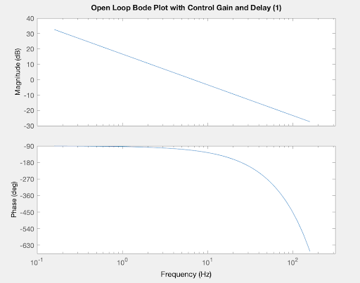
Open loop Bode w/ control gain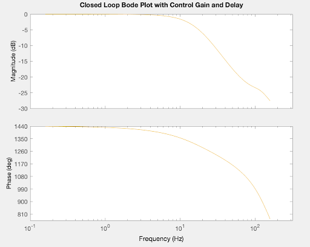
Closed loop Bode w/ control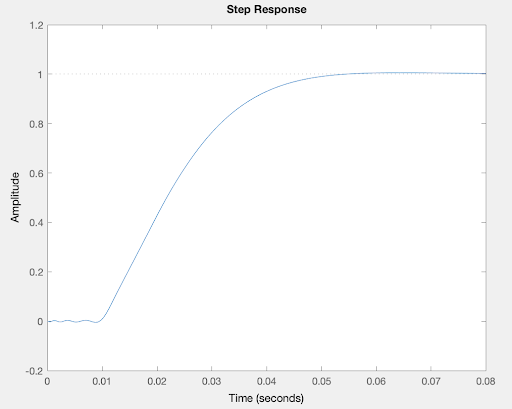
Closed loop step response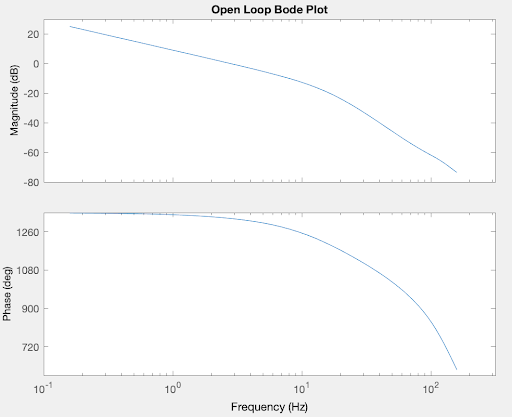
Outer open loop Bode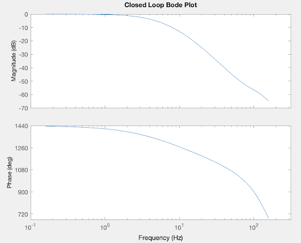
Outer closed loop Bode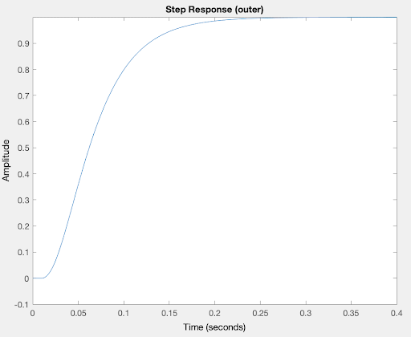
Outer closed loop step response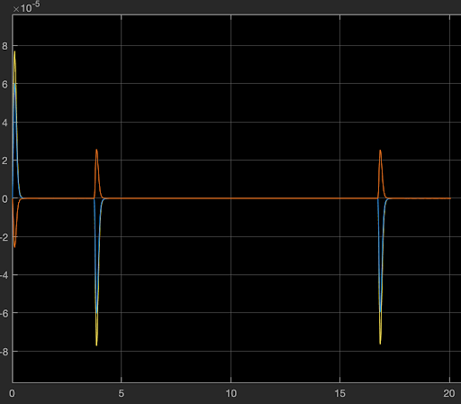
Error angle (θe)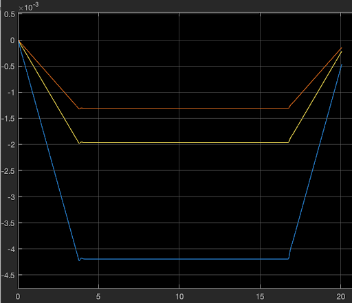
Angular momentum hw_B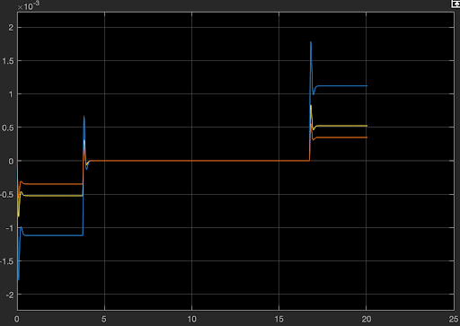
Torque ḣw_B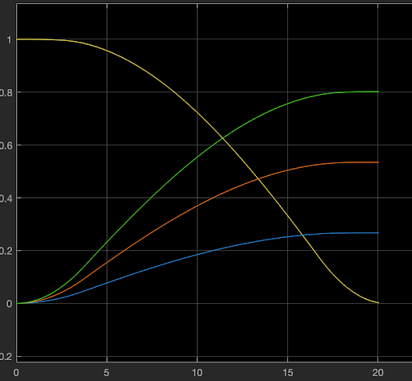
Quaternion q_BI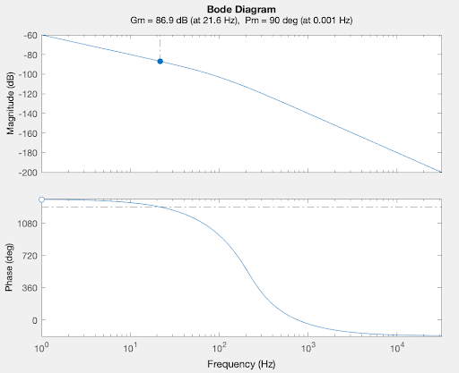
Open loop Bode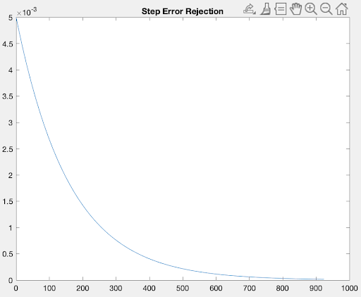
Step error rejection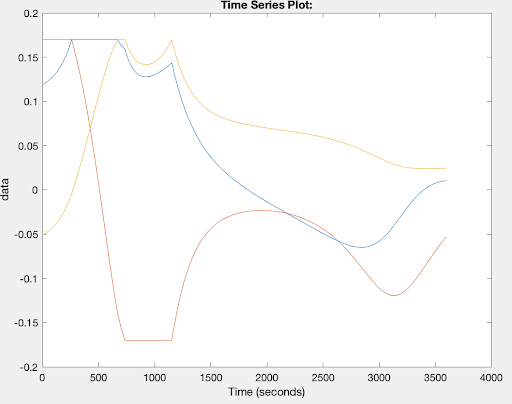
Commanded magnetic moment (A·m²)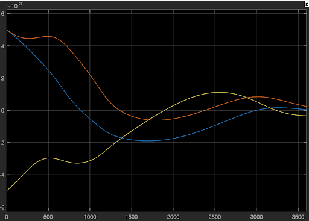
Reaction wheel angular momentum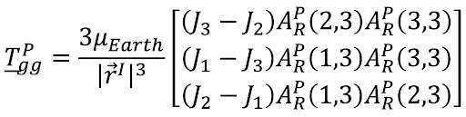
Gravity gradient torque implementation (3μ/r³ · n × J·n)A spacecraft attitude estimation system using a Kalman filter to track orientation and angular velocity while compensating for gyroscope bias and noisy measurements. The filter converges rapidly to steady-state bias estimates and provides smooth angular velocity outputs.
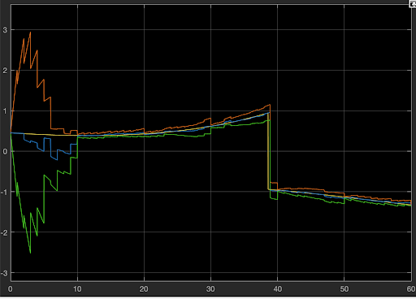
Angle tracking — vector 1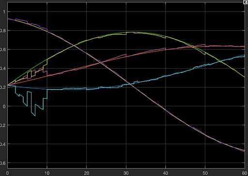
q̂_bi vs q_bi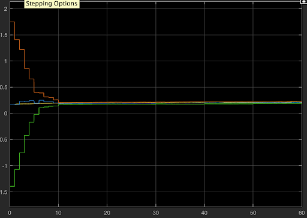
Gyroscope bias convergence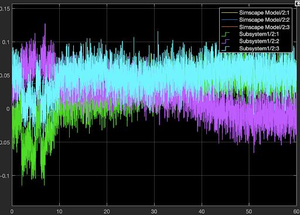
Raw vs filtered ω_biA two-loop cascaded control architecture for a 3U CubeSat driven by a Blue Canyon Technologies XACT reaction wheel assembly. Designed for step, ramp, sine, and disturbance inputs with full frequency-domain stability analysis.
Numerical and analytical analysis of a Langmuir probe in cylindrical and spherical geometries using MATLAB's PDE Toolbox.
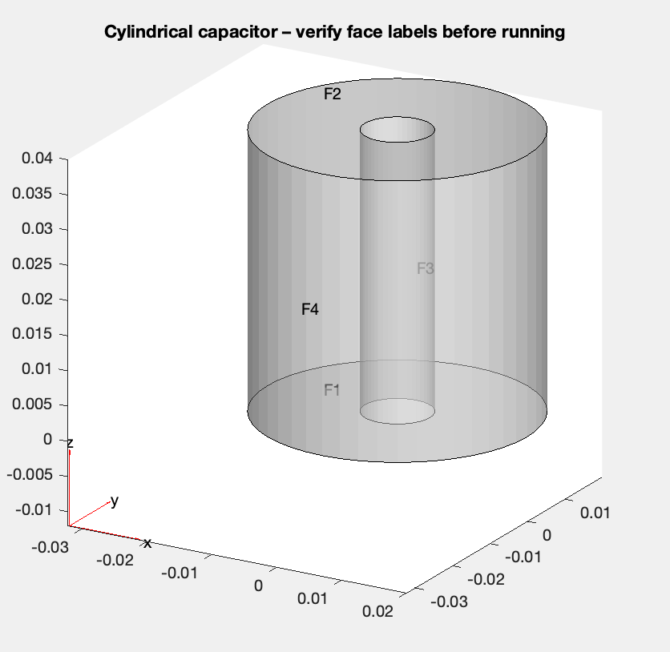
Cylindrical mesh model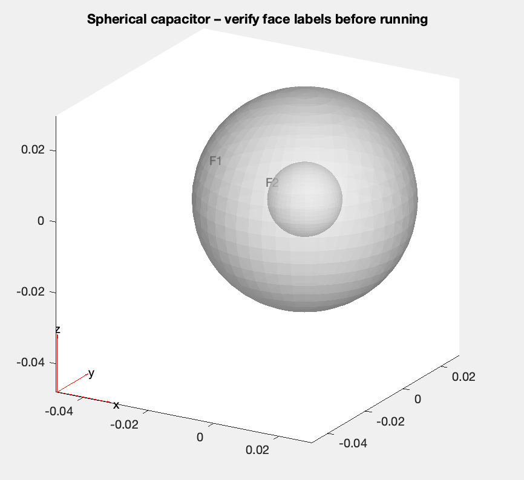
Spherical mesh model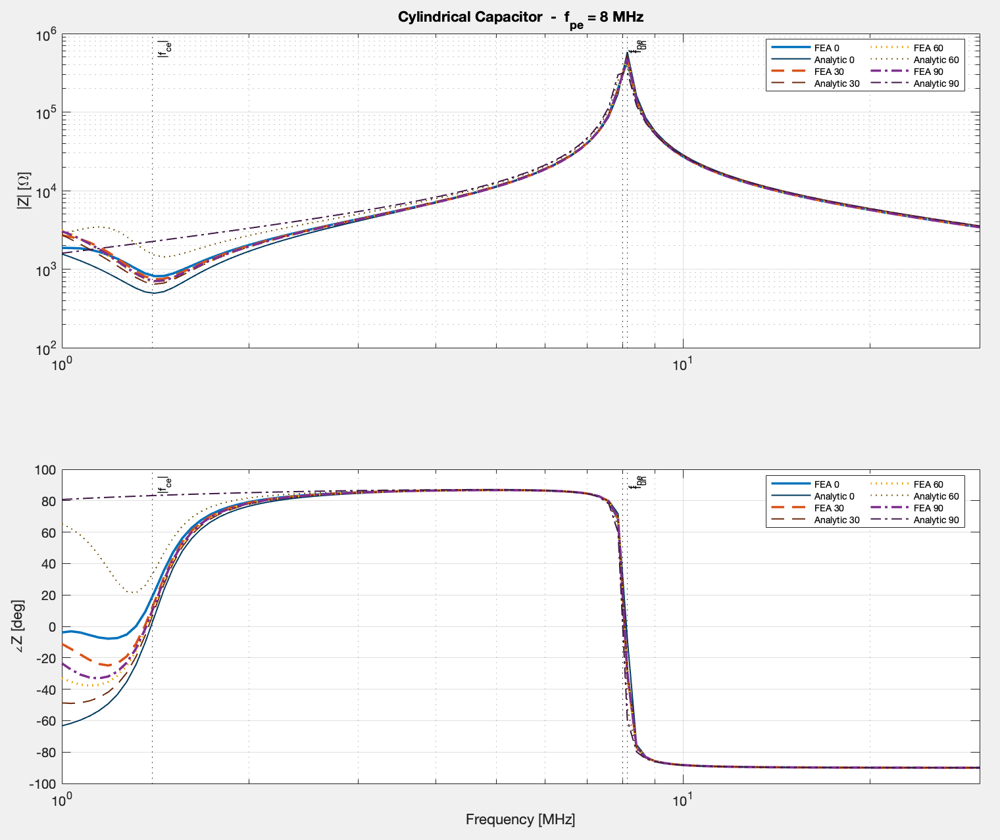
Cylindrical — 8 MHz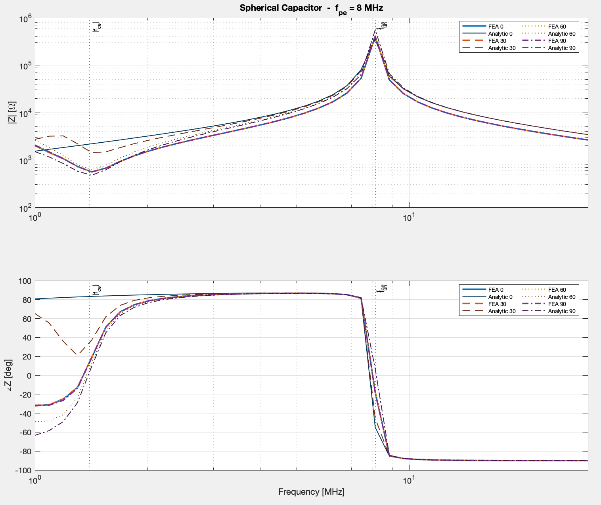
Spherical — 8 MHzContact
I'm currently pursuing my M.S. at Utah State and open to conversations about spacecraft GNC, internship opportunities, or research collaborations.
Logan, Utah